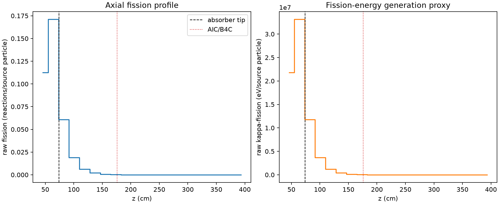
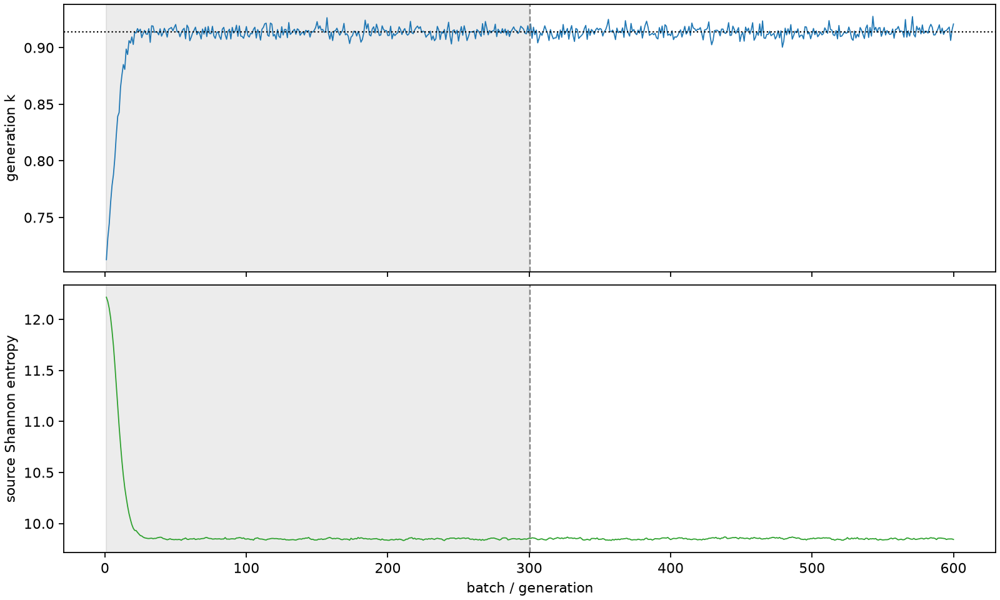

| field | value |
|---|---|
| experiment | V2-STAGE_32_OGRENCI_02-0006 |
| k | 0.9138976559554547 |
| MC standard error | 0.00016891158773217797 |
| seconds | 1159.1526249099998 |
| acceptance | not_assessed |
| convergence | review_required |
Completed is output integrity only; physical and statistical review required. Zero tallies do not prove zero production or zero uncertainty.
| diagnostic | value |
|---|---|
| geometric fuel voxels | 5280 |
| zero fission tally voxels | 1846 |
| low signal fuel voxels | 3000 |
| low signal fission share | 0.00010276437333546888 |
| low signal kappa share | 0.00010280862038995474 |
| important fission share | 0.9501150696240066 |
| previous filter included | 2280 |
| duration estimate s | 1562.5173488400023 |
| actual minus estimate s | -403.3647239300026 |
| fission relative MC error | statistics |
|---|---|
| all_geometric_fuel | {"voxels": 5280, "positive_mean_voxels": 3434, "zero_mean_voxels": 1846, "undefined_relative_error_voxels": 1846, "median": 0.05727425947263544, "p95": 1.0, "maximum": 1.0000000000000002} |
| low_signal | {"voxels": 3000, "positive_mean_voxels": 1154, "zero_mean_voxels": 1846, "undefined_relative_error_voxels": 1846, "median": 0.5997535882724285, "p95": 1.0, "maximum": 1.0000000000000002} |
| important_95pct | {"voxels": 909, "positive_mean_voxels": 909, "zero_mean_voxels": 0, "undefined_relative_error_voxels": 0, "median": 0.004680042189336699, "p95": 0.01065887695765728, "maximum": 0.011859007951092472} |
| outside_previous_filter | {"voxels": 3000, "positive_mean_voxels": 1154, "zero_mean_voxels": 1846, "undefined_relative_error_voxels": 1846, "median": 0.5997535882724285, "p95": 1.0, "maximum": 1.0000000000000002} |
| kappa_fission relative MC error | statistics |
|---|---|
| all_geometric_fuel | {"voxels": 5280, "positive_mean_voxels": 3434, "zero_mean_voxels": 1846, "undefined_relative_error_voxels": 1846, "median": 0.05717356906308347, "p95": 0.9999999999999999, "maximum": 1.0000000000000002} |
| low_signal | {"voxels": 3000, "positive_mean_voxels": 1154, "zero_mean_voxels": 1846, "undefined_relative_error_voxels": 1846, "median": 0.6002898166314634, "p95": 1.0, "maximum": 1.0000000000000002} |
| important_95pct | {"voxels": 909, "positive_mean_voxels": 909, "zero_mean_voxels": 0, "undefined_relative_error_voxels": 0, "median": 0.004673179474191682, "p95": 0.01064313146603124, "maximum": 0.0118407615474736} |
| outside_previous_filter | {"voxels": 3000, "positive_mean_voxels": 1154, "zero_mean_voxels": 1846, "undefined_relative_error_voxels": 1846, "median": 0.6002898166314634, "p95": 1.0, "maximum": 1.0000000000000002} |
| axial bin | fission share | kappa-fission share |
|---|---|---|
| 1 | 0.3020043319573547 | 0.3019890614775001 |
| 2 | 0.4593775889562972 | 0.4593314211962151 |
| 3 | 0.1631515341684077 | 0.16318987527200726 |
| 4 | 0.05090692645038728 | 0.05092218495919742 |
| 5 | 0.01662003522187891 | 0.016625286472633144 |
| 6 | 0.005424352707111035 | 0.005426082956058022 |
| 7 | 0.001768547034637962 | 0.0017691014444521317 |
| 8 | 0.0005565228839187397 | 0.0005567316112196038 |
| 9 | 0.00013572298881726953 | 0.0001358008725077315 |
| 10 | 3.9628675433163204e-05 | 3.9642335555682054e-05 |
| 11 | 1.140494793065794e-05 | 1.1405194536518286e-05 |
| 12 | 2.793575480783438e-06 | 2.7949805464097868e-06 |
| 13 | 5.235510432069491e-07 | 5.240850935448331e-07 |
| 14 | 8.520078523409795e-08 | 8.546455875336843e-08 |
| 15 | 1.6805161470173519e-09 | 1.6779186367343347e-09 |
| 16 | 0.0 | 0.0 |
| 17 | 0.0 | 0.0 |
| 18 | 0.0 | 0.0 |
| 19 | 0.0 | 0.0 |
| 20 | 0.0 | 0.0 |
Histories include the inactive-to-active transition at batch 300. kappa-fission approximates fission energy production, not total heat deposition.

